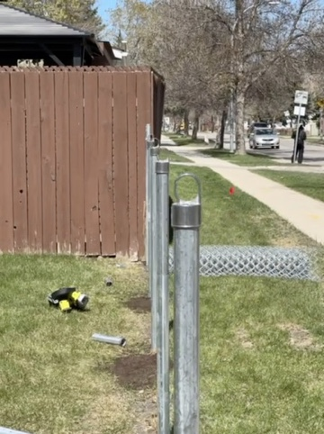
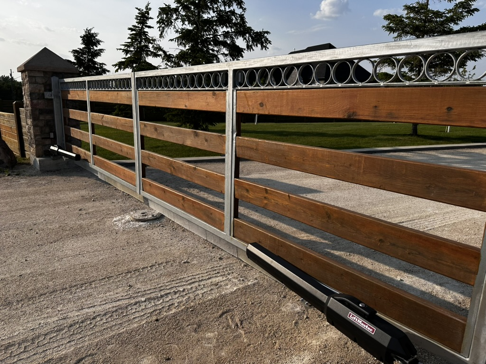
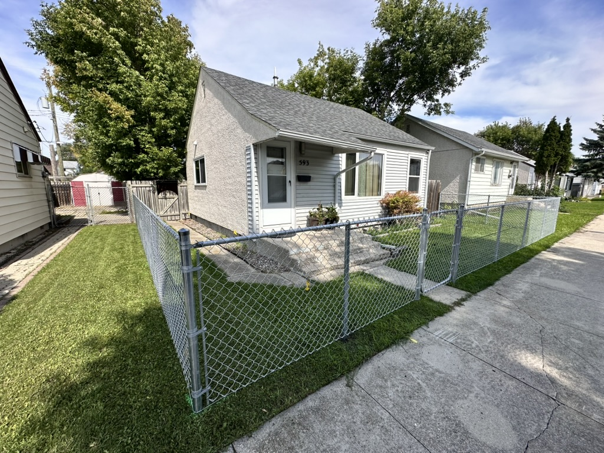
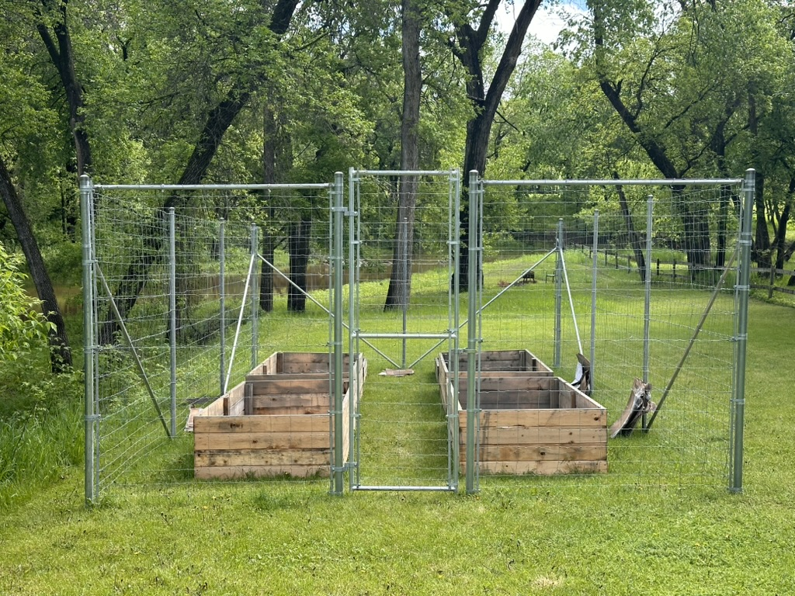

The maintenance-free fence that actually stays maintenance-free. We install every vinyl fence on driven metal posts — because vinyl panels are only as permanent as the posts holding them up.
Why Vinyl + Metal Posts
Vinyl fencing is marketed as maintenance-free and long-lasting — and the panels themselves deliver on that promise. PVC does not rot, does not absorb moisture, does not need staining, and does not attract insects. But here is the problem most fence companies will not tell you: the vinyl panels are only as stable as the posts they are attached to. When a vinyl fence is installed on wood posts set in concrete — which is still the industry standard — those wood posts rot at the ground line within 8 to 12 years. When the post rots and breaks, the entire vinyl panel section collapses. You end up replacing posts on a "maintenance-free" fence.
That is why Pete Fixes only installs vinyl fencing on driven metal posts. We do not offer a wood post option for vinyl, period. Our metal posts are driven below the frost line into undisturbed soil, so they will not heave in Manitoba's gumbo clay and they will not rot, ever. The vinyl panels sleeve over or attach to the metal posts, creating a system where the structural element (metal) and the visible element (vinyl) are both permanent. This is the only way we believe vinyl fencing should be installed in Winnipeg, and it is the only way we will do it.

Privacy Styles
Vinyl privacy fencing is the most popular style we install for Winnipeg homeowners, and for good reason. A solid vinyl privacy fence gives you the same seclusion as a wood privacy fence — blocking sightlines from neighbours, street traffic, and passersby — but without any of the annual maintenance. No staining every two years. No sealing. No replacing warped or cracked boards. The fence looks the same on day one as it does on year fifteen.
Our vinyl privacy panels come in tongue-and-groove construction, where each board locks into the next to create a seamless solid wall with no gaps. This is structurally stronger than individual boards nailed to rails, and it means the panels will not develop the shrinkage gaps that plague wood privacy fences in Manitoba's dry winters. Privacy panels are available in 5 ft and 6 ft heights, and can be installed with a flat top, scalloped top, or lattice top accent for added visual interest.

Picket & Semi-Privacy
Not every yard needs a solid privacy wall. Vinyl picket fencing brings the charm of a traditional white picket fence to your Winnipeg home without the painting, scraping, and rot repair that comes with a real wood picket fence. Our vinyl picket panels are available in classic pointed-top, dog-ear, and flat-top profiles, in heights from 3 ft to 4 ft — perfect for front yards, garden borders, and decorative boundaries that welcome visitors while keeping the yard defined.
For homeowners who want something between full privacy and open picket, semi-privacy vinyl panels offer a middle ground. These panels feature alternating boards or spaced slats that allow airflow and filtered light while partially screening your yard from view. Semi-privacy is an excellent choice for side yards, pool surrounds, and patio areas where you want some seclusion without completely closing off the space. Like all our vinyl styles, picket and semi-privacy panels are installed on driven metal posts for a permanent, worry-free result.

Colours & Finishes
While white remains the most popular vinyl fence colour — and the one most people picture — modern vinyl fencing is available in a range of colours and finishes that can complement any home exterior. We offer vinyl panels in classic white, almond, clay, grey, and dark brown as standard options. Several manufacturers also produce vinyl with realistic wood grain textures that mimic the look of stained cedar or painted wood from a distance, giving you the aesthetic of wood with the zero-maintenance reality of vinyl.
The colour in vinyl fencing is not a surface coating — it is mixed throughout the entire thickness of the material. This means it cannot chip, peel, or flake the way paint does on wood. UV stabilizers are built into the PVC compound to prevent fading and yellowing from Manitoba's intense summer sun. A vinyl fence installed today will hold its colour for decades with nothing more than an occasional rinse from a garden hose to remove dust and pollen. For homeowners who are tired of the stain-and-repeat cycle of wood fence ownership, vinyl is the permanent solution.
